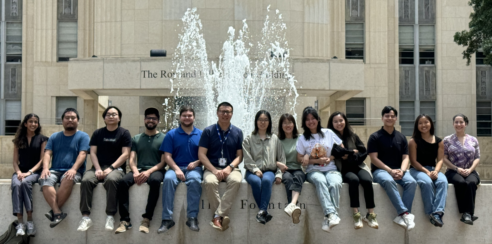

Dr. Wang’s Team
Wang Team Members
The Wang Lab is supported by a collaborative team of researchers at multiple career stages, whose combined expertise enables the lab’s scientific goals. The group includes faculty-level leadership, postdoctoral scholars, research staff, and doctoral trainees who contribute through ongoing research experiments.

Current Lab Members:
- Instructor: Liang Sun
- Postdoctoral Specialists: Ying Wang, Hongjiang Wu
- Research Assistant: Valerie Dalton
- PhD Candidates: Hanwen Feng, Xuqian Tan, Xueting Zhou
The Wang Lab also benefits from the contributions of undergraduate and high school trainees, whose involvement supports both research advancement and scientific training. The lab’s work is made possible through the continued effort and collaboration of its entire team.
Lab Alumni
The Wang Lab gratefully acknowledges former full‑time lab members
whose contributions have helped advance the lab’s research and mission.
- Sara Abouelniaj, Angel Alanis, Ethan Boniuk, Tong Huo, Joshua Rosario-Sepulveda, Xinzhe Yu, Zhili Yu